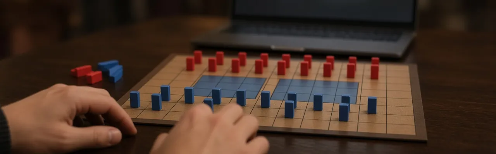
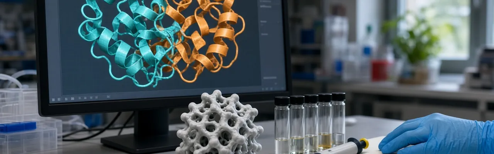
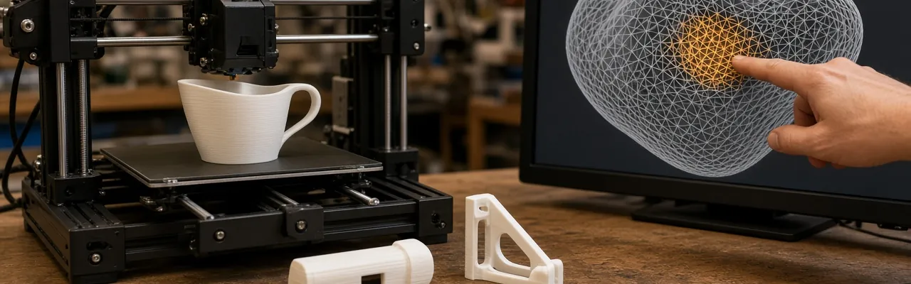

Stratego hides so many possible piece arrangements from an opponent (more than 10^66 of them) that it has resisted the kind of superhuman AI results chess and Go saw years ago. Ataraxos, built by MIT researchers and collaborators, combines self-play reinforcement learning with a model that estimates an opponent's hidden pieces. In a peer-reviewed study published in Nature on 30 September, it beat the world's top-ranked human player 15 games to 1, with 4 draws, after training for about a week on 16 GPUs, roughly a 500th of the compute an earlier DeepMind system needed for a similar result.
Source: news.mit.edu →
AI protein-design tools can now produce sequences that don't closely resemble anything in nature, which makes it harder for biosecurity screening to compare a new design against known threats. SynthID Bio, described in a peer-reviewed Nature paper published 30 September, embeds an invisible, verifiable signature directly into a protein's amino acid sequence or predicted 3D structure. In lab tests across three different protein targets, watermarked designs matched the binding strength, hit rate, and natural diversity of unwatermarked ones, giving screening tools a provenance trail to check.
Source: blog.google →
Generative AI can sketch what an object should look like without understanding how it needs to function, which often leaves a design too fragile, or outright broken, to 3D print. InstructMesh, built by researchers at MIT CSAIL, Google, and Northeastern and released 1 October, lets someone highlight the troublesome part of an AI-generated mesh, describe the problem in plain language, and get a local, printable fix, no 3D modeling experience required. The team used it to print working household objects, including a knee brace and a functional whistle.
Source: news.mit.edu →